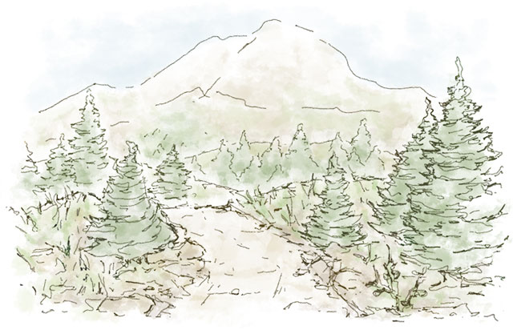

The Story So Far...
The road has led you to Bellowhill, a small village at the crossroads of two of the largest trade roads. Further down the road is Bald Rock Mine. The entire village is in an uproar. No one has heard from Bald Rock in weeks. The smiths are especially irate, as they’ve run through their supply of ore, and the shipment expected last week never arrived. The elders whisper about seeing smoke over the hills… where the mining town sits.
You and your party have been charged with investigating the happenings of Bald Rock.